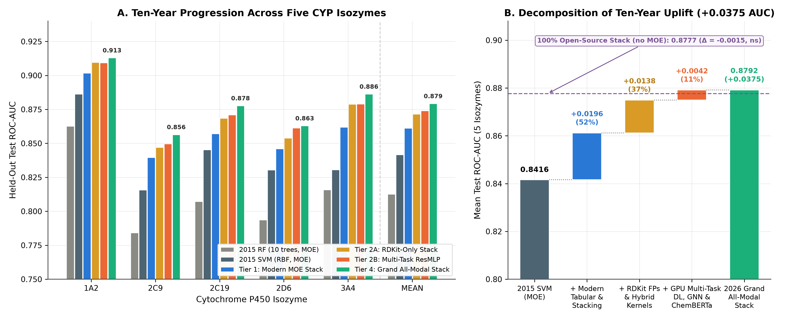
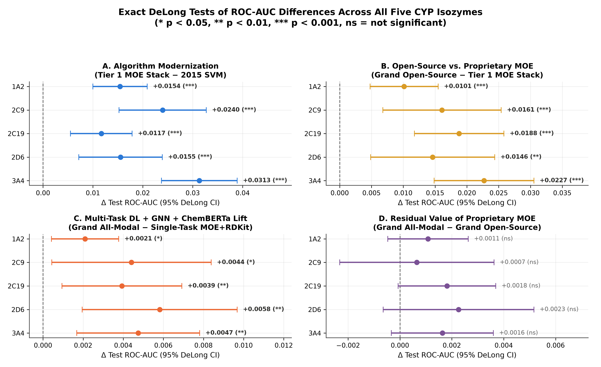
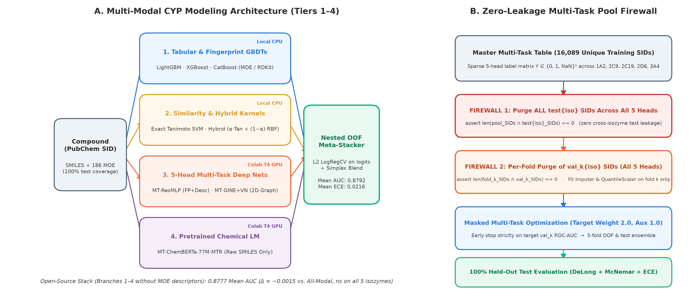
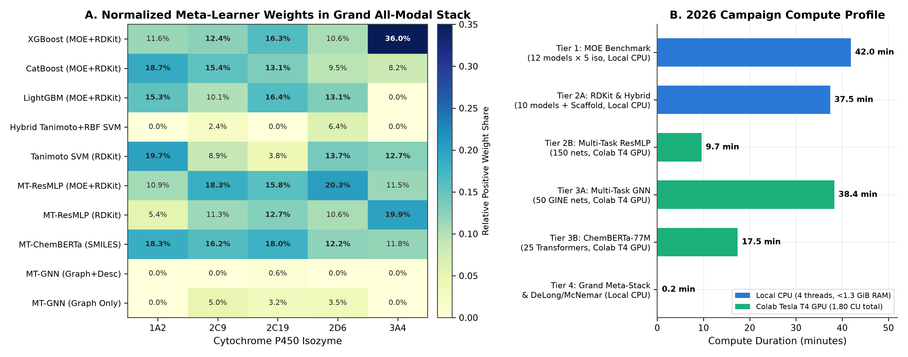
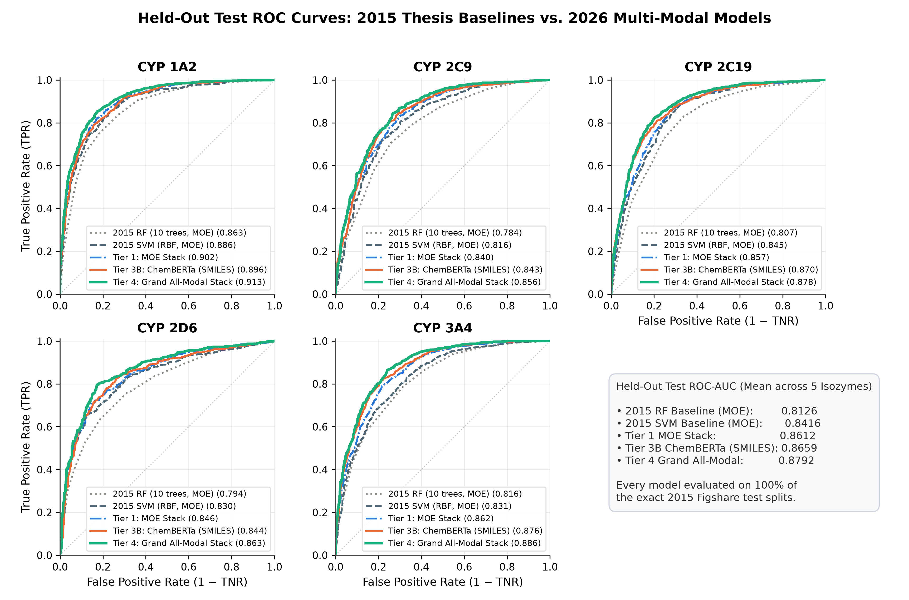
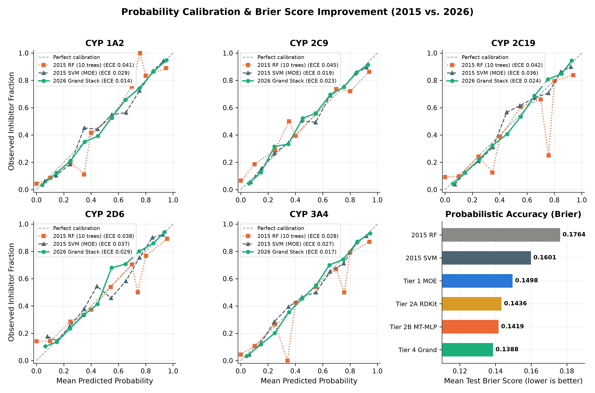
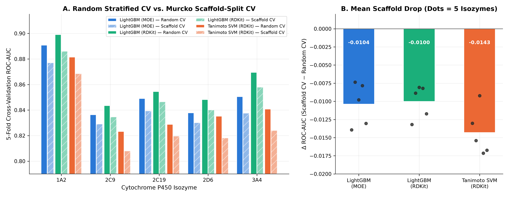

In 2015, an AWS Free Tier t1.micro wheezed overnight at 10% CPU credits to prove that open-source Python classifiers could beat MOE Binary QSAR on five cytochrome P450 isozymes. Eleven years later, we pointed a local mini PC, a 1.80-credit Colab Tesla T4, a 77-million-molecule chemical transformer, and an AI research orchestrator at the exact same Figshare splits. Here is what survived—and what became obsolete.
Almost no benchmark in machine learning holds the molecules, labels, and test splits frozen for eleven years. Drag the slider below to step from a single-vCPU AWS micro instance in 2015 to a multi-modal 2026 meta-stack—every number is computed on 100% of the original Figshare test sets.
"In 2015, open-source classifiers beat MOE's classifier while still renting MOE's eyeballs. In 2026, open-source cheminformatics and a 77-million-molecule language model retired the entire proprietary descriptor suite—with exact DeLong proof."
Click any isozyme below to inspect all 15 landmark models across Tiers 1–4, exact DeLong significance tests, and the positive stacking weights of the Grand All-Modal meta-learner. Notice how CYP 2D6 (the smallest training set, N=4,433) sees the largest multi-task jump—jumping from 74.9% (2015 SVM) to 80.79%!
Hype says "deep learning replaced everything." Reality is sharper, weirder, and way more interesting. Because we ran controlled ablations on the exact same splits, we can split the ten-year gain down to the fourth decimal place:
+0.0196 AUC on the exact unchanged 186 MOE columns from 2015. Histogram gradient boosting (LightGBM, XGBoost, CatBoost), QuantileTransformer scaling, and nested log-odds stacking did half the work without touching a single new feature or GPU.
+0.0138 AUC from RDKit Morgan count fingerprints, pharmacophore bits, MACCS keys, RDKit 2D descriptors, and exact Tanimoto + Hybrid RBF kernels. Under strict Murcko scaffold splitting, RDKit beats MOE on 5/5 isozymes with less generalization drop.
+0.0042 AUC (statistically significant on 5/5 isozymes, DeLong p < 0.03). Multi-task ResMLPs share knowledge across all 5 CYP heads, while ChemBERTa-77M-MTR reads raw SMILES strings with zero descriptors and earns 12–18% weight in the final stack on every isozyme.







In 2015, finishing a thesis meant spending 2–3 semesters simultaneously learning Python, Linux CLI, AWS Free Tier provisioning, LaTeX, MOE, cheminformatics, and Pharmaceutical Sciences coursework—then waiting overnight for a throttled single-vCPU micro instance to finish one SVM grid. That apprenticeship forged real scientific instincts. What changed in 2026 is that once a scientist has those instincts, AI-coordinated computation collapses the execution gap from months to an afternoon.
Every number on this page is bound directly to notebooks/results/*.csv and verified .npz prediction archives. Readers shouldn't squint at frozen tables—they should slice isozymes, audit DeLong intervals, and inspect calibration live.
When a local kernel SVM OOM'd at 4.3 GiB on a 14 GiB host, it was refactored to single-fold in-place assembly (<1.3 GiB) in minutes. When an fp16 GNN scatter tripped on CUDA, it was patched on the fly. Human judgment sets the firewalls; AI executes the symphony.
The moral arc of computational pharmacology bends toward open weights and open chemistry. When a 3.4M-parameter open SMILES transformer + RDKit + multi-task PyTorch matches a licensed commercial suite at $p > 0.05$, the barrier to world-class ADMET modeling drops to a laptop and two dollars of cloud GPU.